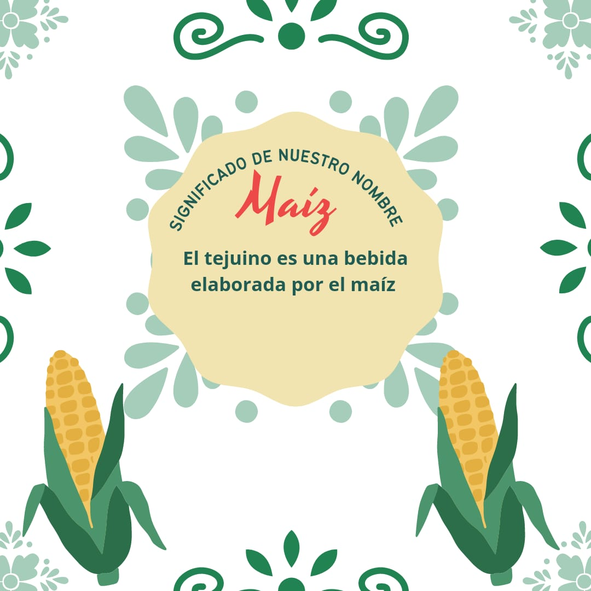
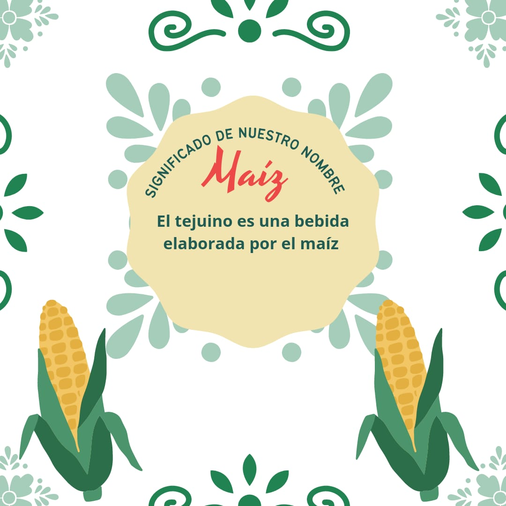

About us
Our company arose from many creative and innovative ideas and others that were not so much. we did a series of questions to rate the ideas and thus be able to make the best decision in the end there was no many points of difference and the chosen idea was not the one with the highest score, but it was not one of the worst either.
Having the base that was the idea, we were able to start with this project, we began by considering what was the that We were going to offer the client and since we were going to offer it, having the basic tejuino, we wanted to add some complements something like a presentation but at the same time this will not ruin its flavor on the contrary it toward better, the complements were the lemon snow, the chamoy and the tajín in the glass that in addition to making it eye-catching had a good flavor.
By already having the idea of the product that would be offered, they began to look for a name, our name is what further characteristic of our company since it is a fun name for everyone, choosing the name was not difficult We only had two ideas and we chose the most representative one. After the name we started with the creation of the logo, the first idea we had for a logo was determined and we use the most striking colors such as red and green, in addition to the fact that they are related to he product because our product is made from lemon and lemon is green. When choosing a slogan, nothing was complicated for us, we used the second idea that we had as option of name and we modified it a bit so that we can use it as our representative phrase.
Then we began to advertise on social networks, we created an Instagram account and made nails how many publications by the time the first sale was made, people would already locate us a bit. The first sale was a success, a large amount of product was sold and it was what was available planned selling foreign sales were also good for us, they were not as good as the first one because it's not the same to sell in a place where everyone knows us to a place where people have no idea what do we do. We are about to finish this project and it has been a way of learning for each and every one of the members.
Slogan
"The drink of the beating of the heart" It is the meaning of the word TEJUINO and what better way to use it as a slogan.
Meaning
The meaning of our logo is "MAIZ" because the tejuino is made from corn, and "PIRIPI" because it is the reference to something that is drinkable, and the snow on top of the glass because we have the option to sell the tejuino with snow or without snow.
 
